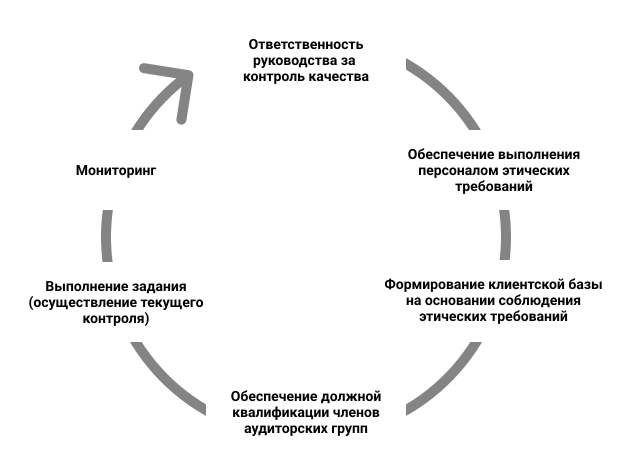

Информация о контроле за деятельностью ООО АФ «Аудит- Гарант»
Заявление Директора ООО АФ «Аудит-Гарант»:
Исполнительный орган заявляет, что в ООО АФ «Аудит-Гарант» создана
и эффективно функционирует система внутреннего контроля качества
оказания услуг, соответствующая масштабам деятельности организации
и требованиям законодательства об аудиторской деятельности в
Российской Федерации, Международному стандарту управления
качеством 1 «Управление качеством в аудиторских организациях,
проводящих аудит и обзорные проверки финансовой отчетности, а также
выполняющих прочие задания, обеспечивающие уверенность, или
задания по оказанию сопутствующих услуг» (ISQM 1),
Международному стандарту управления качеством 2 «Проверки качества
выполнения задания» (ISQM 2), МСА № 220 «Контроль качества при
проведении аудита финансовой отчетности» и других применимых
нормативных правовых актов.
Система внутреннего контроля качества ООО АФ «Аудит-Гарант»
обеспечивает разумную уверенность в том, что ООО АФ «Аудит-Гарант»
и его работники осуществляют проведение аудита и оказание
сопутствующих аудиту услуг в соответствии с требованиями
законодательства Российской Федерации, применимых международных
стандартов, а также что аудиторские заключения и иные отчеты,
выдаваемые ООО АФ «Аудит-Гарант» соответствуют условиям
конкретного задания.
Основными элементами системы внутреннего контроля качества ООО АФ
«Аудит-Гарант» являются
